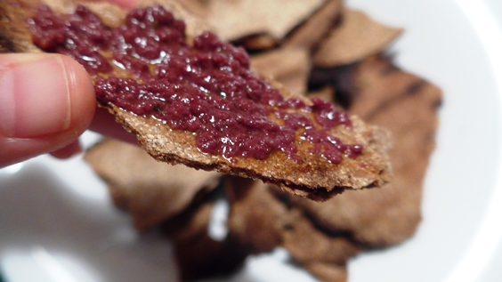
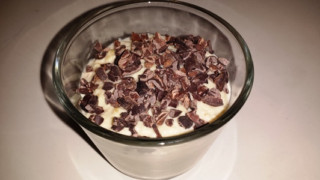
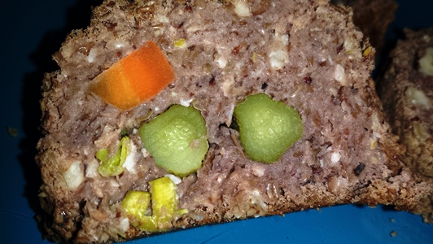

Това е нашият набор от здравословни рецепти.
Надяваме се откриеш нещо и за твоя вкус
Чипс за 1 минута (без глутен)

Продукти:
- 100 г брашно
- 50 мл вода + още съвсем малко
- Щипка сол (може да се пропусне)
Приготвяне:
Използвах 4 вида брашна, като лененото беше най-малко, около 10 г.Другите брашна са по 30 г – елда, киноа, ориз, смлени на мелница в магазина, което ще рече, че не са фино смлени. Ако се използва брашно с глутен (пшенично), може да се пропусне лененето брашно (използвам го за слепване на безглутеновите брашна, защото крайният резултат е ронлив). По-фино смлените брашна може да поемат малко повече вода, примерно 60 мл.В купа се слагат всички брашна. В средата се налива водата и с вилица се бърка.Накрая става на топчета. В този момент се омесва с ръце,примерно 6-7 омесвания.Разделих тестото на 2 и разточих питки. Пекох в тава на горен и долен реотан, на около 140 градуса за около 10-12 минути.
Суров веган крем с вкус на плодово кисело мляко

Продукти:
- 200 г кашу предварително накиснато за поне 6 часа
- Сокът на 1 лимон (или на 1 и ½ – зависи колко кисело обичаш)
- 8 с.л. вода
- 2 с.л. семена чиа
- Много малко мед на вкус.
Приготвяне:
Много бавно го приготвих, може би 20 минути за толкова простичък крем. Пусках блендера, завърташе 1 път кашуто и всичко залепваше по стените. Стържене и пак 1 завъртане. Добавях водата постепенно и към края вече можеше да се блендира, но мисля, че с по-голямо количество ще е много лесно и бързо.В блендера се слагат кашуто, чиата, водата, маааалко мед (сладко няма да е вкусно, медът е за баланс на лимона) и част от лимоновия сок. Слагах мед с дръжката на лъжицата, т.е. съвсем малко. В оригинал рецептата е с агаве.Чиата поема течност 7-9 пъти обема си. Така че, ако има 2 с.л. чиа, то поне 14 с.л. течност е добре да се добавят. Т.е. лимоновият сок и водата трябва да са поне 14 с.л. За този крем е добре да са повече от 14 с.л., върви му да е по-влажен, а не стегнат и желиран.Лимонът се добавя по малко, за да уцелиш вкуса си. Ако в даден момент стане достатъчно кисело, допълни течността с вода. На мен ми харесва да е много кисело и сложих цял лимона на 100 г кашу. Т.е. ако обичаш кисело спокойно може да сложиш сока на 2 лимона за 200 г кашу.Отгоре е поръсено с начукани сурови какаови зърна. Да ви е сладко.
Руло Стефани без месо (веган)

Продукти:
- 300 г сурова леща
- 150 г орехи (може да се пропуснат)
- 30 г ленено семе, смляно
- Кисели краставички
- Чесън (пресен по възможност)
- Моркови (от туршия са по-подходящи)
- Сушени домати от консерва (защото са киселички)
- Маслини
- Подправки по желание – сол, риган, чубрица.
Приготвяне:
Лещата се сварява много добре.Отцежда се и се пасира в кухненски робот.Добавя се смляното ленено семе, подправките и се пасира. От лененео семе „каймата“ се събира и може да е леко лепкава.Накрая се добавят орехите и се пасира няколко пъти, така че орехите да се начупят, но да не стават на брашно, вкусно е ако хрупат.Каймата се изсипва върху фолио/хартия и с лъжица се разнася в правоъгълник. Добре се притиска с лъжицата, така че да няма въздух в каймата и да е добре слепната.В моя вариант сложих първо краставичките.Завих рулото един път.После добавих пресния чесън, завих.И накрая морковите.И донавих рулото.Тъй като не слагам сол на лещата маслините и доматите добавят сол и са леко киселички. Изполвам маслини Каламата от буркан, с ниско съдържание на сол и са леко киселички.Използвам фолиото да повдигам рулото и да го навивам, много е лесно и бързо.Пекох на силна фурна за кратко. В рулото няма нещо, което да иска готвене, затова исках отвън да изсъхне и да стане хрупкаво, а вътре да е влажно и сочно. 20 минути на 180 градуса.